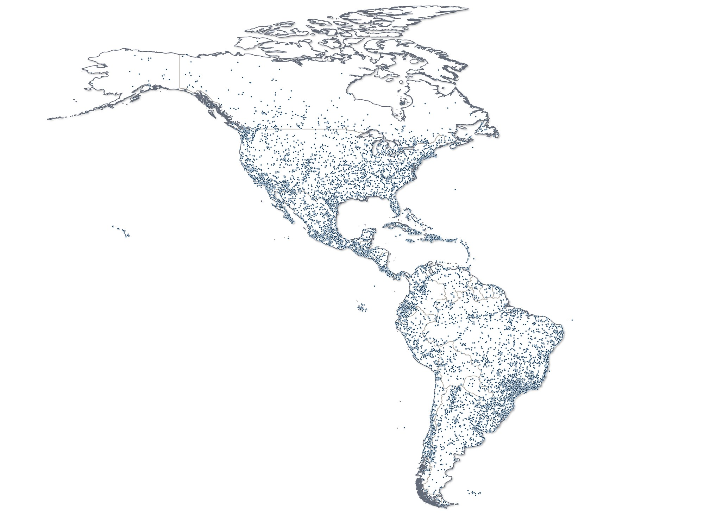
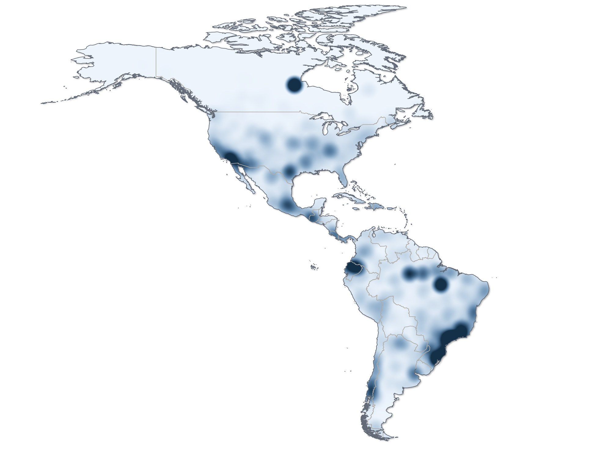
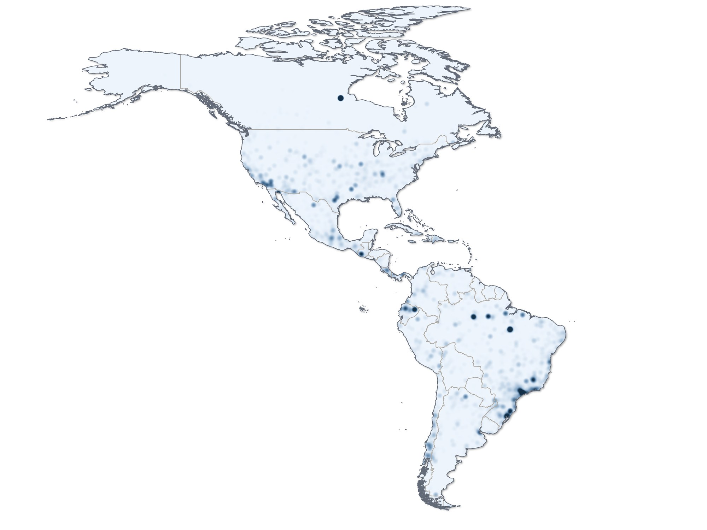
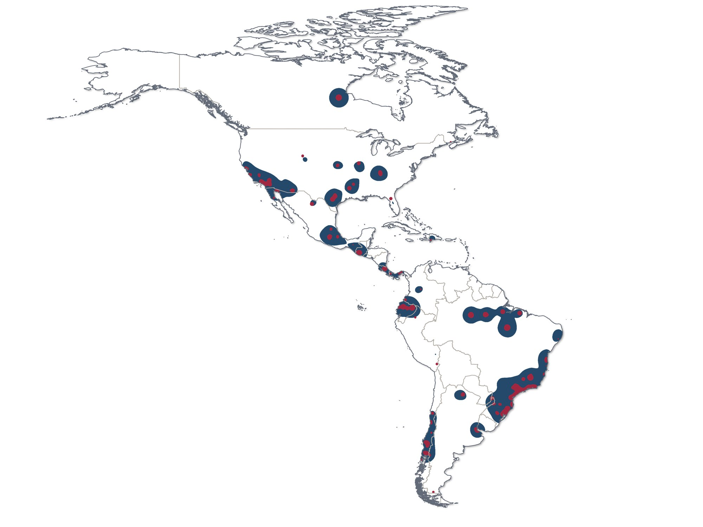

Spiders of the Americas: where the records are and how much has been collected
The starting point of the thesis: 88,000 georeferenced records, record density and sampling effort, and the 63 best-known areas of the continent.
- Deliverable
- PhD thesis, Graduate Program in Zoology, UFMG (ch. 3)
- Advisor
- Adalberto J. dos Santos
- My role
- Author: database, analyses and maps
- Tools
- QGIS · ArcGIS Pro · BioDinamica (Dinamica EGO) · R




88,684 spider records with at least municipality-level precision, selected from the 148,333 in SPIDBASE.
Kernel density with a 100 km² area of influence around each record. Peaks fall in urbanized areas with active research.
Sampling effort calculated in BioDinamica, in 1° cells. It highlights the spatial bias of collecting rather than the number of records.
The two maps side by side. The patterns match in the main collecting hotspots.
63 areas in 13 countries where high sampling effort and high record density overlap. Turn on Numbers and Names in the corner of the map and hover over a number to see the area.
The problem
Before mapping diversity, you need to know where it was looked for. Spider records pile up near cities, universities and museums, and that bias shows up in any map made with them.
The data
Records from SPIDBASE (plate 6). Of the 148,333 records from the Americas, 88,684 had coordinates precise to at least the municipality (GADM level 2): the subset that produced the most consistent models in a test of nine combinations of geographic precision.
The method
- Comparison of nine levels of geographic precision by regression, to choose the data subset.
- Kernel density, with a 100 km² area of influence per record.
- Sampling effort in BioDinamica (Dinamica EGO), in 1° cells.
- Spatial autocorrelation (Moran’s I) and correlation between maps in R.
- Best-known areas: overlap of high effort and high density.
The result
Records concentrate in urbanized areas with active research. This bias map is the reference for reading the next four plates.
- Record density is highly clustered in space (Moran’s I = 0.91).
- The 63 best-known areas run from Chile to Canada and are spread across 13 countries.
- Churchill, in Manitoba, is an exception: a well-studied area despite its low population density.
Publication
- Russo P. (2024). Spider biogeography of the Americas: from literature data to diversity patterns. PhD thesis, Graduate Program in Zoology, UFMG.